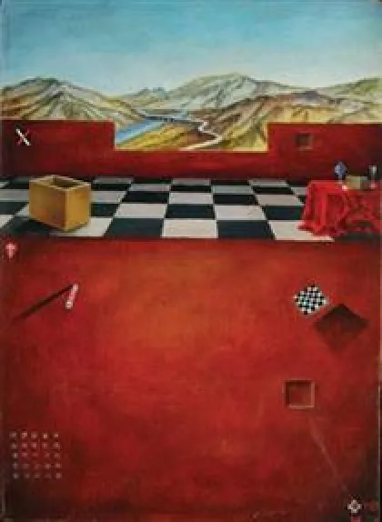
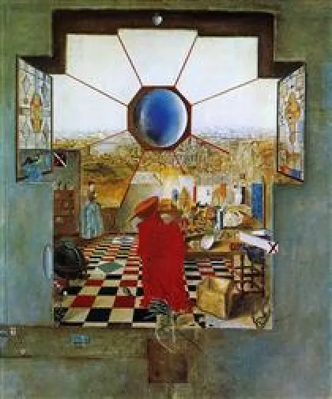
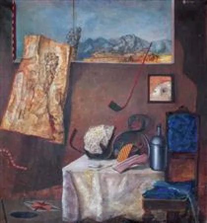

<!DOCTYPE html>
<html lang="fr" x-data="{menuIsOpen: false}" :class="{noscroll:menuIsOpen,}"></html>
<html lang="fr">
<head>
    <meta charset="UTF-8">
    <meta http-equiv="X-UA-Compatible" content="IE=edge">
    <meta name="viewport" content="width=device-width, initial-scale=1.0">
    <title>Daay'o</title>
    <script defer src="https://unpkg.com/alpinejs"></script>
    <link rel="stylesheet" href="../src/css/style.css">
    
</head>
<body>

    <header>

        <button aria-controls="mainNav" @click="menuIsOpen = ! menuIsOpen"
        class="header__icone--menu-burger">
        
        </button>
        <nav
        id="mainNav" x-show="menuIsOpen" x-transition.duration.800ms class="menu">

        <ul>
            <li><a class="menu__list" href="./serguei_paradjanov.html">Sergueï paradjanov</a></li>
            <li><a class="menu__list" href="./leonid_sejka.html">Leonid Sejka</a></li>
            <li><a class="menu__list" href="./robert_rauschenberg.html">Robert Rauschenberg</a></li>
            <li><a class="menu__list" href="./jospeh_beuys.html">Joseph Beuys</a></li>
            <li><a class="menu__list" href="./billeterie.html"> Billetterie</a></li>
        </ul>
        </nav>

        <a href="../en/home_page.html">
            
        </a>

        <a href="./index.html"><h1 class="header__nom--site">Daay'o</h1></a>

    </header>

    <div>
        
        <h2 class="titre__article--leonid">Leonid Sejka</h2>
    </div>

    <main>

         <section class="block__article">

                <h2 class="titre__page-article-leonid">Sa vie</h2>
    
                <p class="text__page-article-leonid">
                    Leonid Šejka (1932-1970) était un peintre et un architecte serbe. Il était membre et fondateur du groupe artistique Mediala.
                </p>
    
                <p class="text__page-article-leonid">
                    Šejka est aujourd'hui considéré comme l'un des peintres les plus originaux de Yougoslavie, qui a tenté d'atteindre une nouvelle objectivité, 
                    ni moderne ni post-moderne, 
                    en dépeignant le monde des objets contingents dans un espace magique délimité par la "Ville", les "Junk Yards" et le "Château".
                </p>
    
          </section>

          <section class="block__article">

            <h2 class="titre__page-article-leonid">articles sur différentes oeuvre qu'a produit Leonid Sejka</h2>

            <h3 class="description__oeuvre">Terasa tigra</h3>
            
            <h3 class="description__oeuvre-date">1969</h3>
            <a href="./serguei_oeuvre_easter.html"><p class="redirection__page-oeuvre">Cliquez ici pour en décourvir plus sur l'oeuvre</p></a>

            <h3 class="description__oeuvre">Odaja Omega</h3>
            
            <h3 class="description__oeuvre-date">1967</h3>
            <a href="./serguei_oeuvre_pieta.html"><p class="redirection__page-oeuvre">Cliquez ici pour en décourvir plus sur l'oeuvre</p></a>

            <h3 class="description__oeuvre">Kroz prozor</h3>
            
            <h3 class="description__oeuvre-date">1966</h3>
            <a href="./serguei_oeuvre_radko.html"><p class="redirection__page-oeuvre">Cliquez ici pour en décourvir plus sur l'oeuvre</p></a>

        </section>


    </main>


    <footer>

        <a href="./index.html"><h1 class="footer__nom-site">Daay'o</h1></a>

        <ul>
            
            <li class="footer__pages-annexes">
                <a href="./a_propos.html">A propos</a>
            </li>

            <li class="footer__pages-annexes">
                <a href="./contact.html">Contact</a>
            </li>
        </ul>

        <ul class="footer__reseaux">
            <li>
                <a href="">
                    </a>
            </li>

            <li>
                <a href="">
                    </a>
            </li>

            <li>
                <a href="">
                    </a>
                </li>
        </ul>

        <a class="footer_mailto" href="">event-daayo@gmail.com</a>

        <p class="footer__copyright">Copyright © 2023-Faris Halepovic-MMi 1A2 Montbéliard</p>

    </footer>
    
</body>
</html>